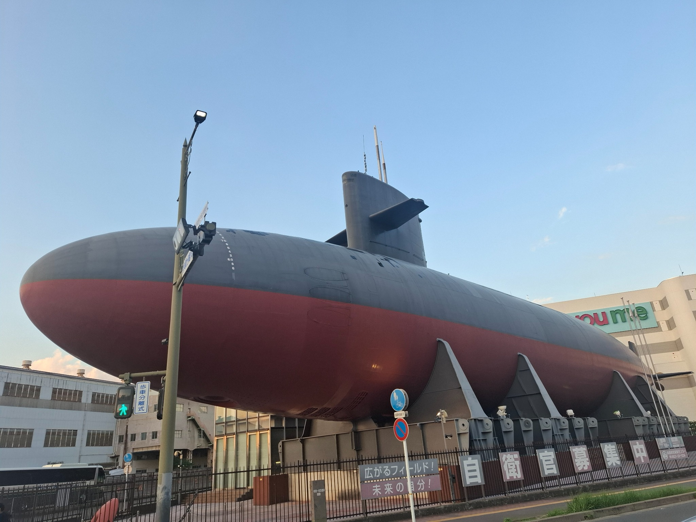
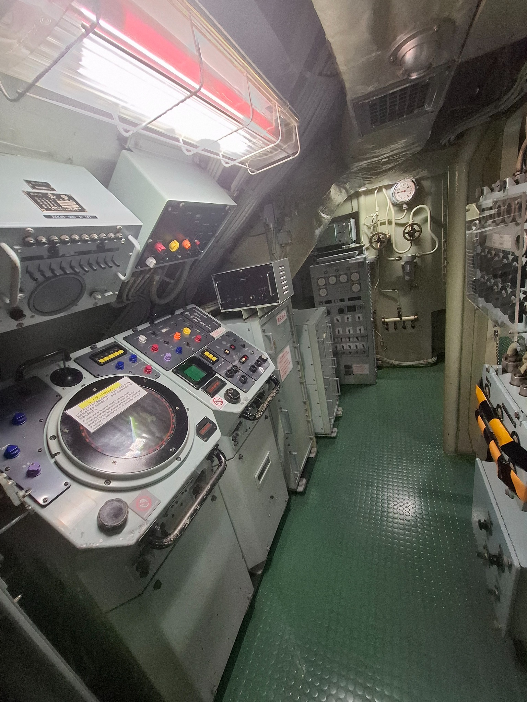
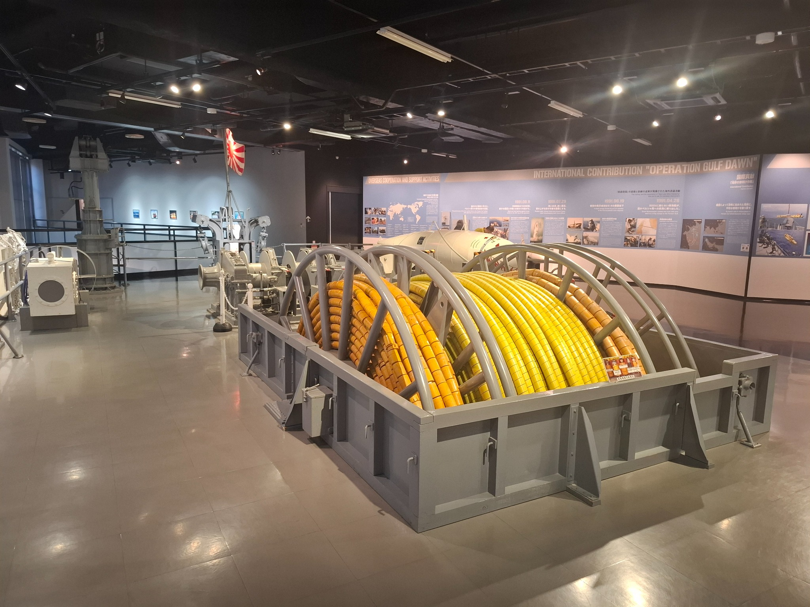
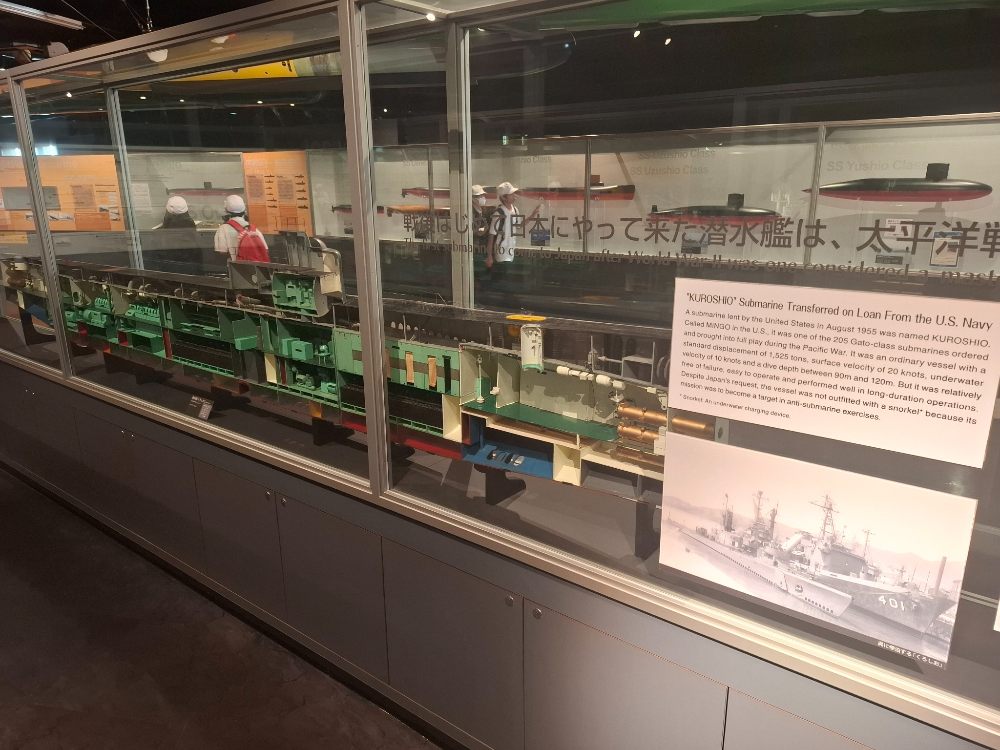

JMSDF Submarine Museum, Kure
| Location | 5-32, Takaramachi, Kure, Hiroshima 737-0029, Japan |
|---|---|
| Visited | 31 October 2013, 1 October 2026 |
| Website | https://www.jmsdf-kure-museum.go.jp/en/ |

Museum Report
The JMSDF Museum in Kure is one of several museums maintained by the JMSDF, with each one dealing with different elements of JMSDF Capability - the Kure one dealing with Mine Warfare, and Submarines.
The most prominent element of the museum is the 1980s submarine Akishio. The submarine has been mounted high on cradles above the entry into the museum, and is a prominent landmark in the area. You can access the submarine from the second floor of the museum – the tour route takes you along the main deck for about a 3rd of the length of the submarine, taking you through some accommodation areas and the control room. They have Perspex panels covering hatches going down to the lower deck so that you can look down and see what is in them. I find it a little disconcerting that this boat – a rough contemporary of our Collins class, was retired in 2004 and turned into a museum, while 20 years later we are still planning on working with the Collins for some time to come.

Inside the museum, the first floor covers mine warfare, with artifacts and displays covering both offensive and defensive operations. There are information boards covering all of the mine warfare vessels operated by the JMSDF since it was founded, and the various mine clearing operations that they have been involved in, including the post-war clearance of Japanese waters, and more recent operations in the Middle East.

The second floor covers submarine warfare, and again traces the history of the Japanese submarine service, with a lot of information on Kuroshio – an ex-USN WW2 boat which was transferred to Japan for ASW training in 1955.

The ground floor has some general history of the JMSDF, a café, and a well stocked gift shop. I managed to get a very good book on the history of Japanese submarines from 1905-2025.
Entry to the museum is free, and it is very easily accessible. It is about a 5-minute walk from either the Kure railway station, or the Kure ferry terminal, and is literally just across the road from the Yamato museum.